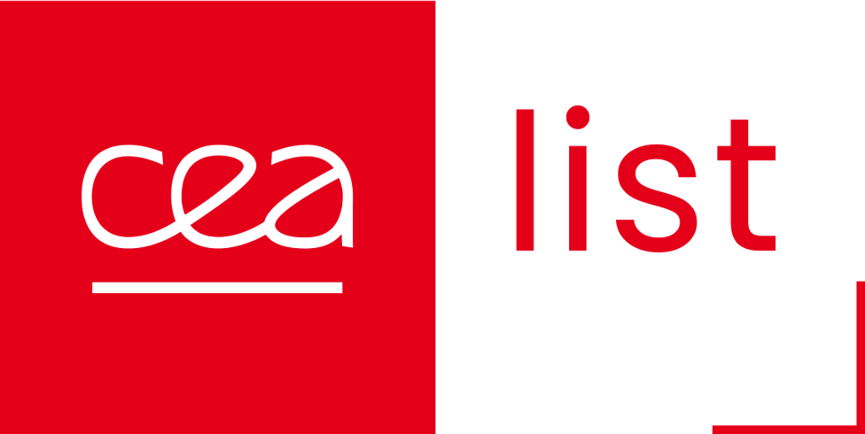
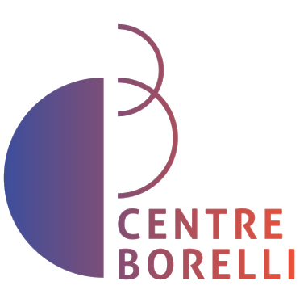
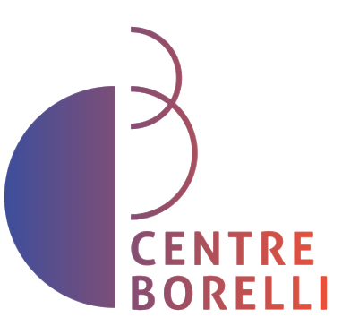

Grasping operation by a soft gripper used in the ARISE project — contact simulation performed in real time by a LEBNN.
European Research Programme · CEA-List · 2024–2027
ARISE
- Ansys
- Omniverse
- PyTorch
ARISE is a European research programme aimed at designing soft industrial robots operating in close contact with human operators. Robots are trained via reinforcement learning in a physically realistic virtual reality simulation developed by CEA. My LEBNN neural network architecture (published in JMPS, 2024) is used to simulate hyperelastic components in real time, making the full simulation tractable.


 
